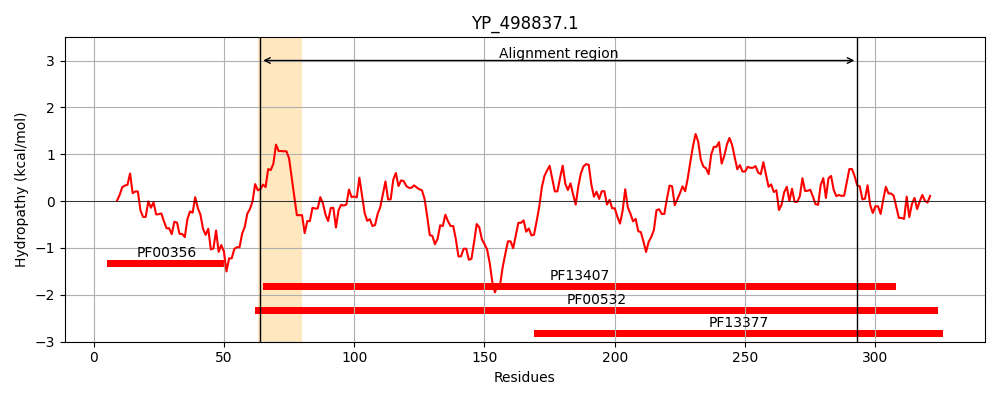
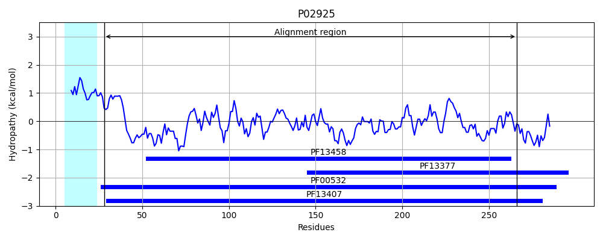
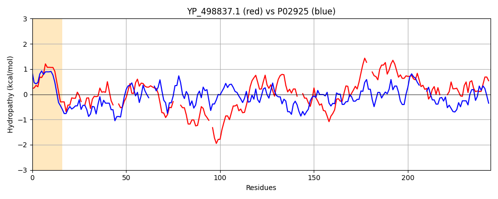

Hit Accession: P02925
Hit TCID: 3.A.1.2.1
Hit Description: gnl|BL_ORD_ID|8234 gnl|TC-DB|P02925|3.A.1.2.1 D-ribose-binding periplasmic protein precursor - Escherichia coli.
Mach Len: 244
e:0.000000
Query TMS Count : 1
Hit TMS Count: 1
TMS-Overlap Score: 0.000000
Predicted Substrates:CHEBI:10410;beta-D-ribopyranose
BLAST Alignment:
Score: 127 , Bit scores: 53 bits, E-value: 3.6e-08, Alignment length: 244, Percentage identity: 23
Query: 64 TIGVILPSLTNPFFSALMQSIHDHKPS-DVDLCFLTSTATDLYD--NIKHLIDRGIDGLIIAQYISSPDALNNYLK---KHHVPYVVLDQNDHQG-YTDFVRTNEYQGGQLAAQHLIELGHNHMIIVAPYDMMANMSTRVAG--FVDTLRANQLPEPQIVHTELSKRGGLTIVDDIMVQ--SATAIFAINDELAIGILRGLIEHGISIPKDISLIGYD---DIDYAAYVSPPLTTVAQPITDIG 293
TI +++ +L NPFF +L +L L S + N++ L RG L+I + DA+ N +K + ++P + LD+ +G + ++ GG++A ++ + ++ + + R G F + A++ + + GL ++ +++ A+FA NDE+A+G LR L G S D+ ++G+D D + A T+AQ IG
Sbjct: 28 TIALVVSTLNNPFFVSLKDGAQKEADKLGYNLVVLDSQNNPAKELANVQDLTVRGTKILLINP--TDSDAVGNAVKMANQANIPVITLDRQATKGEVVSHIASDNVLGGKIAGDYIAKKAGEGAKVIELQGIAGTSAARERGEGFQQAVAAHKFNVLASQPADFDRIKGLNVMQNLLTAHPDVQAVFAQNDEMALGALRALQTAGKS---DVMVVGFDGTPDGEKAVNDGKLAATIAQLPDQIG 266 | Protein Hydropathy Plots: |
|---|
|  |  |
Pairwise Alignment-Hydropathy Plot:
|
|---|
|  |